これは原作 wiki ではなく、この移植版の仕様です。原作と違う点は「移植版の違い」を参照してください。
30 件
| 名前 | 説明 | 敵が踏んだとき | 特殊効果 | 版 | |
|---|---|---|---|---|---|
| ダイバーダウンの罠 | 殴られてダメージを喰らうぞ | 敵が踏むと殴られてダメージを喰らうぞ | 踏むと現在HPの1/5＋0〜9のダメージを受ける（力尽きることがある） 敵が踏むと、プレイヤーの殴りと同じ式のダメージをその敵が受ける 0.16 一巡後の世界: デッドマンズ吉良が踏むと最大HPの1/5＋0〜9のダメージ | 0.13 | |
| ローリングストーンズの罠 | HPが半分になってしまうぞ | 敵が踏むとHPが半分になるぞ | 踏むと現在HPが半分（切り捨て）になる。HP1のときは減らず力尽きない 射撃枠にセックス・ピストルズを装備していると、ダメージは現在HPの1/4で済む 敵が踏んでも現在HPが半分になる（0になるなら1に直す。HP1の敵は倒れる） 0.16 一巡後の世界: デッドマンズ吉良が踏むとHPが半分（+1）になる | 0.13 | |
| ワムウの影 | ワムウに蹴られてアイテムが壊れるぞ | 敵が踏むとワムウに蹴られるぞ | 踏むと現在HPの1/5＋0〜9のダメージを受け、生きていれば装備していない持ち物を1つ壊される（持ち物が無ければダメージだけ） スパイス・ガールを装備していると物は壊れない ヤバイもの（箱・袋）が壊れると中身が周りにばら撒かれる 敵が踏むと0〜9のダメージ（現在HPの1/5は加わらない） 0.16 一巡後の世界: デッドマンズ吉良が踏むと現在HPの1/5＋0〜9のダメージ | 0.13 | |
| DIOの罠 | ロードローラーで押しつぶされるぞ | 敵が踏むとロードローラーで押しつぶされるぞ | 踏むとHPが1になる（すでにHP1なら力尽きる）。周り8マスの敵は即死し、仲間はHPが1になる 能力枠にスタープラチナ系のDISCを装備していると、HPは1にならず半分で済む 敵が踏むとその敵のHPが1になり、周り8マスのほかの敵は即死、仲間はHP1。1マス以内のプレイヤーも巻き込まれる（ボスの承太郎・時止めの承太郎は半分で済む） 0.16 一巡後の世界: デッドマンズ吉良が踏むとHPが1になり、周りが巻き込まれる | 0.13 | |
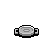 | バッドカンパニーの地雷 | 足をやられて動きが遅くなるぞ | 敵が踏むと動きが遅くなるぞ | 踏むと5のダメージを受け、生きていれば鈍足になる（倍速のときは倍速が解けるだけで鈍足にはならない） メイド・イン・ヘブンを装備していると速度は変わらない（ダメージは受ける） 敵が踏んでも同じく5のダメージと鈍足（敵が倍速なら解けるだけ） | 0.13 |
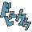 | エコーズACT2の罠 | ドヒュウと後ろにすっ飛ぶぞ | 敵が踏むとドヒュウと後ろにすっ飛ばすぞ | 踏むと向きと反対の後ろへ最大10マス吹き飛ぶ。壁などにぶつかると5のダメージ 敵が踏むと向きの反対方向へ吹き飛ぶ +α: 名前が「ドヒュウの罠」になる | 0.13 |
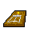 | ネズミ捕りの罠 | 毒針でスタンドが弱まることがあるぞ | 敵が踏むと体が溶けて防御ができなくなるぞ | 踏むと10のダメージを受け、生きていれば装備中の攻撃・防御DISC（修正値が0でないもの。両方ならどちらか一方）の修正値が1下がる 漆黒のオーラが付いたDISCは溶けずに済む 0.16: 射撃枠にラットを装備していると修正値は下がらない 敵が踏むと10のダメージを受け、生きていれば被ダメージ補正が99になり防御ができなくなる | 0.13 |
| 血の槍の罠 | 血の槍だ | 敵が踏んでも同じ効果だぞ | 踏むと20のダメージを受ける（防御は効かない） 敵が踏んでも20のダメージ 発動すると必ず壊れる | 0.13 |
| 名前 | 説明 | 敵が踏んだとき | 特殊効果 | 版 | |
|---|---|---|---|---|---|
| ホワイトアルバムの罠 | 体が凍って動けなくなるぞ | 敵が踏むと凍って動かなくなるぞ | 踏むと凍結状態になり8ターン動けない 射撃枠にホルス神、または能力枠にホワイトアルバム・マジシャンズレッドを装備していると、かかった直後に解除される イエロー・テンパランスの発動中は氷漬けがすぐ解ける 敵が踏むと凍って動かなくなる 0.16 一巡後の世界: デッドマンズ吉良が踏むと凍結する | 0.13 | |
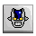 | クラフトワークの罠 | その場所にしばらく固定されるぞ | 敵が踏むと攻撃するまで固定されるぞ | 踏むと固定状態になり6ターン歩けない（向きは変えられる） 敵が踏むと解けない固定状態になる（殴られるまで動けない） 0.16 一巡後の世界: デッドマンズ吉良が踏むと、その場に移動を封じられる | 0.13 |
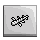 | スカイ・ハイの罠 | まぶたがストーンと落ちてくるぞ | 敵が踏むと盲目になるぞ | 踏むと盲目になる（20ターン） 敵が踏んでも盲目になる（30ターン） 0.16: 射撃枠にスカイ・ハイを装備していると、盲目にならず回避する（踏む前からの盲目も残る） 0.16 一巡後の世界: デッドマンズ吉良が踏むと盲目になる | 0.13 |
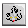 | トーキング・ヘッドの罠 | 体が思うように動かなくなるぞ | 敵が踏むと混乱するぞ | 踏むと混乱状態になる（10ターン） 能力枠にクラッシュを装備していると、かかった直後に解除される 敵が踏むと混乱する | 0.13 |
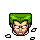 | ダイアーさんの罠 | 波紋でだんだん体が溶かされるぞ | 敵が踏むと波紋の薔薇で失明するぞ | 踏むと波紋の毒状態になり、29ターンHPが自然回復しなくなる 波紋の状態か、能力枠のハーミットパープルを装備していると、毒が解除されて平気 敵が踏むと盲目になる 発動すると必ず壊れる 0.16 一巡後の世界: デッドマンズ吉良が踏んでも何も起きない | 0.13 |
| 名前 | 説明 | 敵が踏んだとき | 特殊効果 | 版 | |
|---|---|---|---|---|---|
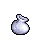 | 猫袋 | 玉美が現れるぞ | 敵が踏むと味方の玉美が現れるぞ | 踏むと周りの空きマスに玉美が現れる（置ける隣が無ければ何も起きない） 敵が踏むとその敵の周りに味方の玉美が現れる（置けても置けなくても罠は消える） 0.16 一巡後の世界: デッドマンズ吉良が踏むと、プレイヤーの周りに玉美が現れる | 0.13 |
| ラクガキの罠 | クリームが出現するぞ | 敵が踏んでも同じ効果だぞ | 踏むとプレイヤーから縦横8マス以上離れた部屋の床にクリームが1体現れる（置ける床が無ければ何も起きない） 罠は必ず消える（壊れる判定を待たない。時間が止まっていると読まずに終わる） 敵が踏んでも同じ効果（敵の位置から離れた所に出る） | 0.13 | |
| リンプ・ビズキットの罠 | 透明な何者かを呼び出すぞ | 敵が踏んでも同じ効果だぞ | 踏むとプレイヤーの周りに透明な敵が1〜3体呼ばれる（置ける隣が無ければ減る） 敵が踏んでもその敵の周りに呼ばれる | 0.13 |
| 名前 | 説明 | 敵が踏んだとき | 特殊効果 | 版 | |
|---|---|---|---|---|---|
| セト神の罠 | 精神力が下がってしまうぞ | 敵が踏むと攻撃力が下がるぞ | 踏むと精神力が1下がる グレイトフル・デッドを装備していると防げる 敵が踏むと攻撃力が5下がる（上限49まで）。老ジョセフ・若ジョセフは一段若い姿に変わって体力が全快する（若ジョセフは鈍足も治る） +α: プロシュート・アレッシーに憑依していると若返りを防げる 0.16 一巡後の世界: デッドマンズ吉良が踏むとレベルが1・精神力が5下がる | 0.13 | |
| ジェイルハウスロックの罠 | 地形やアイテムの場所を忘れるぞ | 敵が踏むとディアボロの顔を忘れるぞ | 踏むと歩いたマス・罠・アイテムの位置を忘れる 未識別のあるダンジョン（レクイエム・試練）では1/2の確率で、地形の代わりに識別済みのアイテムを1つ忘れる +α: 罠を防ぐ共鳴があると何も忘れない 敵が踏むとプレイヤーの顔を忘れて追ってこなくなる（ジョリーンの敵は糸で覚え直す） 0.15 以降: ミュウミュウが 1/4 の確率でこの罠を仕掛ける（見えない） 0.16 一巡後の世界: デッドマンズ吉良が踏むと混乱する | 0.13 | |
| アンダーワールドの罠 | この階に罠をたくさん掘り出すぞ | 敵が踏んでも同じ効果だぞ | 踏むとこの階に罠が10個掘り出される 敵が踏んでも同じ効果 0.16 一巡後の世界: デッドマンズ吉良が踏んでも同じく罠が現れる | 0.13 | |
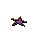 | ダービー弟の落とし穴 | 下の階に落ちてしまうぞ | 敵が踏むとどこかへ引きずり込まれるぞ | 踏むと下の階へ落ちる（ダンジョンの最深部では落ちず、何も起こらない） 射撃枠にタワー・オブ・グレーを装備していると、飛んで越えて落ちない（罠は残る） 敵が踏むとどこかへ引きずり込まれて消える（倒した扱いにならない） 0.16 一巡後の世界: デッドマンズ吉良が踏むと、プレイヤーが落とし穴に引きずり込まれる | 0.13 |
| エコーズACT2の罠 | ボヨヨンとどこかに飛ばされるぞ | 敵が踏むとどこかへ飛ばされるぞ | 踏むとどこかへ飛ばされる（ワープ） 敵が踏むとどこかへ飛ばされる 0.16 一巡後の世界: デッドマンズ吉良が踏んでもワープする +α: 名前が「ボヨヨンの罠」になる | 0.13 | |
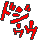 | エコーズACT2の罠 | ピッツァがドジュウと焦げてしまうぞ | 敵が踏むと消し炭になるぞ | 踏むと持ち物の食べ物がすべて焦げる（ピッツァ→焦げたピッツァ→消し炭のように段階が進む）。食べ物が無ければ何も起こらない 敵が踏むと消し炭になって倒れる 0.16 一巡後の世界: デッドマンズ吉良が踏むと表示上の10ダメージだけで、少し焦げる程度 +α: 名前が「ドジュウの罠」になる | 0.13 |
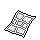 | ヘブンズ・ドアーの罠 | いろいろなことが起こるぞ | 敵が踏むと能力を封じるぞ | 踏むと次のうち1つが等確率で書き込まれる: ・装備DISCを全て外す（何も装備していなければ代わりに混乱） ・精神力が1下がる ・焼身自殺（40のダメージ。HPは1で止まり力尽きない） ・盲目になって後ろへ吹き飛ぶ 盲目のときは書き込みが読めず、何も起きない（罠は残る） 射撃枠にヘブンズ・ドアーを装備していると、書き込みが「体力が回復する」「満腹度が回復する」に書き換わり、HP・満腹度が全回復する（罠は必ず壊れる） 0.16: 書き込みに「盲目」の項目が増え、書き換え結果に「精神力が回復する」が加わる 敵が踏むと能力を封じられる。すでに1段階封じられていると「攻撃できない」状態になる（盲目の敵には効かない） 0.16 一巡後の世界: デッドマンズ吉良が踏んでもヘブンズ・ドアーの効果が起きる | 0.13 |
| バステト女神の罠 | 踏むごとに磁力が強くなるぞ | 何かが飛んでくるぞ レベルに応じて強さが変わるぞ | 踏むごとに磁力の段階が上がり、踏んだ直後にその段階の物が必ず飛んでくる 磁力が最大の段階でもう一度踏むと鈍足になる（倍速は解ける。メイド・イン・ヘブン装備なら何も起きない） メタリカを装備していると磁力が解除される 敵が踏むと物が飛んできてダメージを受ける。物の種類は踏んだ時点のプレイヤーのレベルで変わる: ・低: カナヅチ・カンヅメ・ラジカセ ・中: 刃物・自転車・アヴドゥル・車 ・高: 車・アヴドゥル・はさみ リゾットに憑依していると磁力が解ける（+α） | 0.13 | |
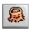 | エンプレスの罠 | 大声で叫んでフロアの敵を起こすぞ | 敵が踏むとその敵の位置がわかるぞ | 踏むと大声でフロアの敵が全員目を覚ます 敵が踏んでも全員が起きるが、踏んだ敵の居場所がわかる | 0.13 |
| ハイウェイ・スターの罠 | 養分を取られてお腹が減るぞ | 敵が踏むとその敵の養分を吸い取るぞ | 踏むと満腹度が20減る 満腹度の吸い取りを防ぐ特別な能力があると防げる 敵が踏むとその敵が倒れ（999ダメージ）、プレイヤーの満腹度が20回復する（最大まで。満たされると完全回復の台詞） | 0.13 | |
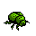 | ワイアードの罠 | 釣られて荷物をバラ撒くぞ | 敵が踏むとその敵の荷物をバラまくぞ | 踏むと装備していない持ち物が1つ釣り上げられ、この階のどこかへ投げ捨てられる（持ち物が無ければ何も起こらず罠は残る） 射撃枠にタスク（ACT1含む）を装備していると、持ち物は奪われず、代わりにプレイヤーがどこかへ飛ばされる ヤバイもの（箱・袋）は落ちた所で壊れて中身がばら撒かれる。スパイス・ガールを装備していると壊れない カルネの死体・ホルマジオのビン・ランドセルなら中の敵が出る 敵が踏むとその敵の持ち物が釣り上げられる（持っていなければ何も起きず罠は壊れる） | 0.13 |
| ホワイトスネイクの罠 | 装備が剥がれてしまうぞ | 敵が踏むと何かのディスクを抜き取るぞ | 踏むと装備DISCが全部外れる（射撃枠も）。何も装備していなければ何も起こらない 射撃枠にフー・ファイターズを装備していると、外れるのはそのDISCだけ DISCの抜き取りを防ぐ特別な能力があると何も外れない 敵が踏むとスタンドの敵はスタンドDISCを抜かれて消滅する（スタンドの裏切り者は1/4だけ）。それ以外の敵は攻撃力と防御力が下がる | 0.13 | |
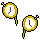 | オエコモバの罠 | アイテムを爆弾にされてしまうぞ | 敵が踏むとその敵にピンをつけるぞ | 踏むと持ち物の1つが爆弾にされる（持ち物が空、または印を付けられる物が無ければ何も起こらず、罠は残る） 敵が踏むとその敵にピンが付く（10ターン後に爆発） | 0.13 |
| 水たまり | 水たまりだ | 水たまりだ | +α: ノーベンバー・レインの発動が置く罠。踏んでも「地面を調べた」と出るだけで何も起きず、壊れない | +α |